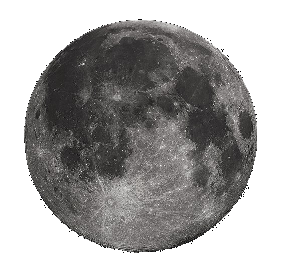

Bem-vindos, terráqueos e extraterrestres curiosos! Este é o blog astronômico que vai levar vocês numa jornada por entre as maravilhas do universo. Aqui, vamos explorar os mistérios da Lua, o nosso satélite natural, e de Marte, o planeta vermelho que desperta a imaginação de tantos.
Se vocês estão procurando informações científicas rigorosas e detalhadas, é melhor procurar em outro lugar. Aqui, vamos mergulhar no encantamento que o cosmos nos oferece. Mas isso não quer dizer que não vamos aprender muito pelo caminho!
Vamos viajar pela história da Lua, desde as teorias sobre sua origem até os planos da humanidade para estabelecer bases lunares no futuro. E, é claro, vamos examinar as fotos incríveis que os astronautas da NASA capturaram enquanto caminhavam por sua superfície.
Depois, vamos dar um pulo em Marte, um planeta fascinante que tem capturado nossa imaginação desde os tempos mais antigos. Vamos falar sobre as missões que a NASA tem enviado para explorar o planeta e sobre as possibilidades de estabelecer colônias humanas lá no futuro.
Mas, como dizia o grande Douglas Adams, "Astronomia é uma maneira de colocar as coisas em perspectiva, para ver como somos pequenos no grande esquema das coisas." Então, preparem-se para se maravilhar com o universo e se lembrar da nossa insignificância diante do cosmos.

A lua é uma das coisas mais incríveis do universo. Ela está lá, todos os dias, olhando para nós com um sorriso misterioso. E nós, pequenos humanos, a olhamos de volta com fascinação. Às vezes, ela está grande e brilhante, como uma enorme bola de queijo. Outras vezes, ela é apenas uma fina fatia de prata no céu noturno. Mas, seja qual for a forma que ela assume, a lua sempre nos lembra que o universo é muito, muito maior do que podemos imaginar. E isso é uma coisa boa, porque significa que ainda há muito mais para descobrir e explorar. Então, olhem para a lua, pensem no que ela representa, e se maravilhem com o vasto cosmos à nossa volta.
Marte é um planeta vermelho, misterioso e fascinante. Ele está lá, girando no espaço, desafiando-nos a descobrir seus segredos. Talvez haja vida lá, talvez não. Talvez possamos viver lá um dia, talvez não. Mas uma coisa é certa: Marte é um lembrete de que o universo é cheio de possibilidades e mistérios ainda não resolvidos. Como Douglas Adams disse uma vez: "Acho que a coisa mais surpreendente do universo é o quão grande ele é." E Marte é apenas uma pequena parte desse universo. Então, vamos olhar para o céu noturno e sonhar com as possibilidades que Marte e outros planetas podem oferecer. Quem sabe o que mais podemos descobrir?